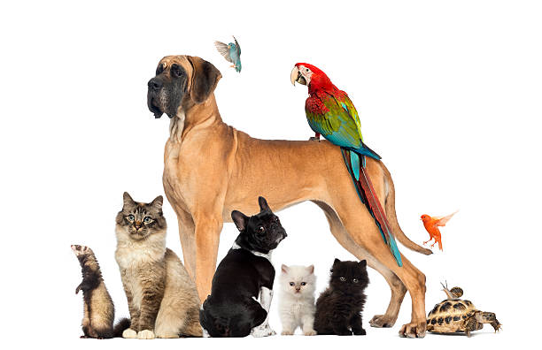

Razas
Conocé diferentes razas y sus características.
Ver sección →Revista Digital
REVISTA DIGITAL
Razas, cuidados, alimentación, adopción, mascotas exóticas y mucho más.
Explorar la revista
BIENVENIDOS
HUELLAS nace como un espacio para conocer mejor a nuestras mascotas y aprender sobre su bienestar, sus necesidades y la importancia de una tenencia responsable.
Conocé diferentes razas y sus características.
Ver sección →Alimentación, salud, castración y bienestar.
Ver sección →Conocé otros animales que también forman parte de muchos hogares.
Ver sección →La importancia de adoptar y ayudar a los animales que necesitan un hogar.
Ver sección →